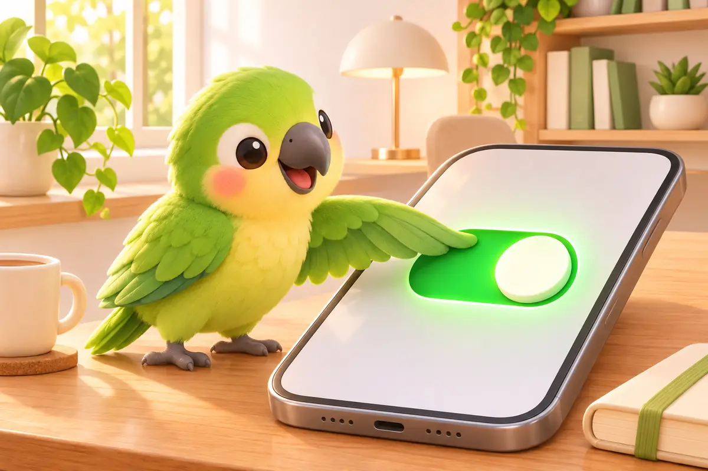
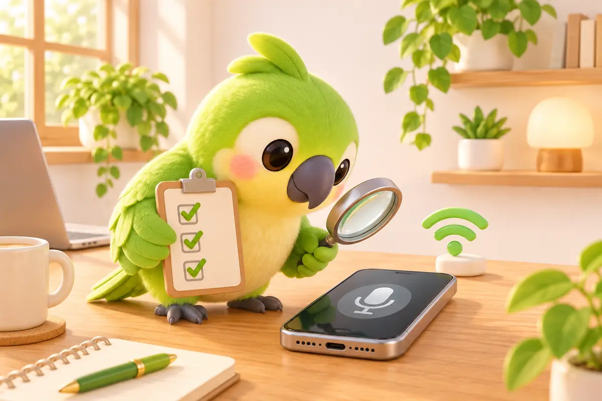

用 iPhone 相機掃描學舌鳥 iPhone 鍵盤 · NT$150 買斷
用 iPhone 相機掃描學舌鳥 iPhone 鍵盤 · NT$150 買斷我是 Sona Orbit，一個人開發學舌鳥的獨立開發者。學舌鳥有 iPhone 版語音鍵盤，所以第 7 節會提到它。內建聽寫的步驟和限制照 Apple 官方說明（在 iPhone 上聽寫文字、iOS 和 iPadOS 功能特色適用範圍），查證日期是 2026 年 11 月 22 日，當時說明頁最新的版本是 iOS 27。不同版本的 iOS 設定名稱可能略有不同，請以你的畫面為準。學舌鳥的功能以 iPhone 版介紹頁為準。
1. 先看結論：三個步驟開始說
- 打開聽寫。「設定」→「一般」→「鍵盤」→ 打開「啟用聽寫」。
- 點麥克風。在任何輸入框叫出鍵盤，點鍵盤上的麥克風圖示，看到插入點旁出現麥克風就開始說。
- 停下來。再點一次麥克風、說「停止聽寫」，或安靜 30 秒讓它自己停。
偶爾回一兩句訊息，做到這裡就夠了。下面幾節是每一步的細節，以及中文使用者常遇到的限制。
2. 打開 iPhone 的聽寫
照 Apple 的說明，步驟如下。
- 打開「設定」App。
- 點「一般」，再點「鍵盤」。
- 打開「啟用聽寫」。如果跳出提示，點「啟用聽寫」。
想知道 Apple 怎麼處理你的語音，可以在同一頁的「聽寫」設定下點「關於聽寫與隱私權」。之後不想用了，回到同一個地方把「啟用聽寫」關掉就好。
鍵盤上找不到麥克風，通常就是這個開關還沒打開。

3. 開始和停止
把游標點在你要開始輸入的位置，點螢幕鍵盤上的麥克風。有些輸入框裡也會直接顯示麥克風，點那個也可以。插入點旁出現麥克風圖示，就可以開始說。
聽寫時鍵盤不會收起來。說到一半想手動改一個字，直接用鍵盤打，打完可以接著說。
停止有三種方法：
- 再點一次麥克風。
- 說「停止聽寫」。
- 什麼都不說，安靜 30 秒後會自動停止。
聽寫的語言跟著目前的鍵盤。Apple 的說明寫到，切到另一種語言的鍵盤，就能用那個語言聽寫。想說中文，先確認鍵盤切在中文鍵盤上；中英文要交替說的話，就得來回切鍵盤。
4. 中文怎麼說：標點、換行、表情符號
標點
在 Apple 的功能清單裡，「自動加標點符號」支援國語（台灣）。你正常說話，逗號、句號和問號會自動加上。不想要的話，到「設定」→「一般」→「鍵盤」，關掉「自動標點符號」。
其他符號要用說的，例如說「驚嘆號」。
換行和分段
| 說出 | 效果 |
|---|---|
| 換行 | 換到下一行 |
| 新增段落 | 開始新的一段 |
| 停止聽寫 | 結束聽寫 |
表情符號
說出表情符號的名稱，例如「愛心表情符號」或「笑臉表情符號」。功能清單裡「聽寫表情符號」也支援國語（台灣）。
用說的改字，目前只支援英文
Apple 的說明裡有幾個編輯指令，例如說出一段字再說「選取」或「刪除」，或是用說的把某個字改掉。不過在功能清單裡，「以語音編輯」我查的時候只列了英文（美國）。說中文時，聽錯的字還是用手指點進去改比較快。

5. 要不要網路？國語（台灣）的情況
Apple 的說明寫到，聽寫在 iPhone 上可以用多種語言處理，不用連網路。但「多種語言」不等於每一種。功能清單把「裝置端聽寫和非固定模式聽寫」支援的語言另外列出來，我查的時候裡面有國語（中國大陸）和粵語（香港），沒有國語（台灣）。
所以用台灣的國語聽寫，要先假設需要網路。Apple 也提醒，使用聽寫可能會產生行動數據的費用。另外，在搜尋欄位裡聽寫時，聽寫的文字可能會送給搜尋功能的供應商處理搜尋。
如果你在意聲音會不會離開手機，最準的確認方法是看「關於聽寫與隱私權」裡的說明，以及在飛航模式下自己試一次。
6. 用不順時先檢查這幾件事
| 狀況 | 先檢查 |
|---|---|
| 鍵盤上沒有麥克風 | 「設定 → 一般 → 鍵盤」的「啟用聽寫」有沒有打開 |
| 出來的字是別的語言 | 目前的鍵盤是不是中文鍵盤。聽寫跟著鍵盤的語言 |
| 標點太多或不想要 | 同一頁關掉「自動標點符號」，改成需要時用說的 |
| 突然不能用 | 網路有沒有斷。國語（台灣）不在裝置端聽寫的清單裡 |
| 說到一半自己停了 | 安靜 30 秒會自動停止，再點一次麥克風繼續 |
| 說「刪除」沒有作用 | 用語音編輯文字目前只支援英文（美國），中文要手動改 |

7. 想要詞典、整理口語：第三方語音鍵盤
內建聽寫免安裝，回短訊息很合適。下面幾種情況，可以考慮另外裝一個語音鍵盤：
- 同事的名字、產品名老是被聽錯，想要有地方記下正確寫法，之後自動改對。
- 說話習慣帶「嗯、那個」，或說到一半改口，希望貼上前就整理掉。
- 想把一段口語直接變成條列或信件的格式。
- 在 Mac 上也用語音輸入，希望兩邊共用同一份詞典。
這裡用我自己做的學舌鳥 iPhone 版當例子。它是一個系統鍵盤，在 LINE、訊息、郵件裡切過去就能說：
- 安裝。從 App Store 下載，打開學舌鳥一次，允許麥克風。
- 加入鍵盤。到設定把學舌鳥加入鍵盤。
- 允許完整取用。這是 iOS 對需要和主 App 溝通的鍵盤用的權限名稱，鍵盤才能請學舌鳥錄音、把字放回來。第一次打開 App 有引導，大約一分鐘。
說話時鍵盤上有兩顆按鈕。「完成」照你說的貼上；彩色那顆先用你選的改寫格式整理，再貼上。辨識用的是 iPhone 內建的語音辨識，語言跟著 iPhone 的語言，設定裡也能自己換，錄音不存檔、不上傳。差別主要在辨識之後：多了詞典、整理和改寫。
| iPhone 內建聽寫 | 學舌鳥 iPhone 版 | |
|---|---|---|
| 安裝 | 不用，系統內建 | 從 App Store 下載，加入鍵盤 |
| 費用 | 免費 | NT$150 一次買斷，不訂閱 |
| 系統需求 | 依 iOS 版本與語言 | iOS 26 以上 |
| 聽錯的專有名詞 | 手動改 | 加進詞典一次，之後自動改回來 |
| 贅詞、改口 | 照說的出字 | 設定好 AI 後，貼上前拿掉「嗯、那個」和說錯的部分 |
| 改寫和翻譯 | 沒有 | 改寫滑桿、四種語言翻譯；要用 AI（Apple 內建或自己的 API key） |
| 和 Mac 共用 | 沒有 | 開 iCloud 雲碟後，和免費的 Mac 版共用詞典、改寫格式、文字紀錄 |
不用 AI 也能用：按「完成」就是照你說的貼上。去贅詞、改寫格式、改寫滑桿和翻譯才需要 AI，可以選 iPhone 上的 Apple Intelligence（有機型限制），或填自己的 API key。iPhone 版的完整說明在iPhone 版介紹頁，上架時的整理在學舌鳥 iPhone 版上架那篇。在 Mac 上怎麼開語音輸入，看Mac 語音輸入怎麼開；人名和術語老是錯，看從詞典到專屬語音模型的三層解法。
8. 常見問題
iPhone 語音輸入的開關在哪裡？
在「設定」→「一般」→「鍵盤」，打開「啟用聽寫」。打開後，鍵盤上會出現麥克風圖示。
iPhone 聽寫說中文要怎麼加標點？
國語（台灣）支援自動加標點符號，逗號、句號和問號會自動加上。其他符號用說的，例如「驚嘆號」。換行說「換行」，分段說「新增段落」。
iPhone 聽寫可以離線用台灣的國語嗎？
我在 2026 年 11 月查 Apple 的功能清單時，裝置端聽寫的語言有國語（中國大陸）和粵語（香港），沒有國語（台灣），所以要先假設需要網路。最準的方式是在飛航模式下自己試一次。
為什麼用說的「刪除」「選取」沒有作用？
Apple 的功能清單裡，「以語音編輯」只列了英文（美國）。說中文時，聽錯的字要用手指點進去改。
聽寫為什麼講到一半會停？
Apple 的說明寫到，安靜 30 秒聽寫會自動停止。再點一次麥克風就能繼續。